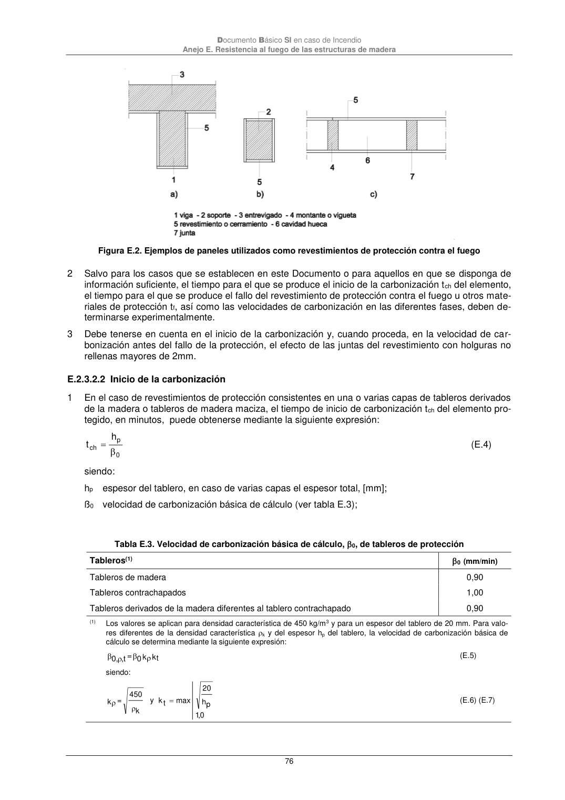

DB-SI Seguridad en caso de incendio · edición 2025-03-04 · capa oficial
Documento DB-SI-oficial · SHA-256 del PDF 0a2e78cd62471d9cc5cfe2efbc6aa39fdbad73c124aea7b039f9de96c141e105
Copia fiel del PDF fuente · Fuente oficial
Ficha de la disposición en la fuente oficial
Formatos: JSON del segmento · Markdown
Anejo E. Resistencia al fuego de las estructuras de madera 76 Figura E.2. Ejemplos de paneles utilizados como revestimientos de protección contra el fuego 2 Salvo para los casos que se establecen en este Documento o para aquellos en que se disponga de información suficiente, el tiempo para el que se produce el inicio de la carbonización tch del elemento, el tiempo para el que se produce el fallo del revestimiento de protección contra el fuego u otros mate- riales de protección tf, así como las velocidades de carbonización en las diferentes fases, deben de- terminarse experimentalmente. 3 Debe tenerse en cuenta en el inicio de la carbonización y, cuando proceda, en la velocidad de car- bonización antes del fallo de la protección, el efecto de las juntas del revestimiento con holguras no rellenas mayores de 2mm. E.2.3.2.2 Inicio de la carbonización 1 En el caso de revestimientos de protección consistentes en una o varias capas de tableros derivados de la madera o tableros de madera maciza, el tiempo de inicio de carbonización tch del elemento pro- tegido, en minutos, puede obtenerse mediante la siguiente expresión: 0 p ch h t (E.4) siendo: hp espesor del tablero, en caso de varias capas el espesor total, [mm]; ß0 velocidad de carbonización básica de cálculo (ver tabla E.3); Tabla E.3. Velocidad de carbonización básica de cálculo, 0, de tableros de protección Tableros(1) 0 (mm/min) Tableros de madera 0,90 Tableros contrachapados 1,00 Tableros derivados de la madera diferentes al tablero contrachapado 0,90 (1) Los valores se aplican para densidad característica de 450 kg/m3 y para un espesor del tablero de 20 mm. Para valo- res diferentes de la densidad característica k y del espesor hp del tablero, la velocidad de carbonización básica de cálculo se determina mediante la siguiente expresión: kt k0 = t, 0, (E.5) siendo: k 450 = k y 0,1 p h 20 max t k (E.6) (E.7) Documento Básico SI en caso de Incendio Anejo E. Resistencia al fuego de las estructuras de madera 77 donde: k densidad característica en kg/m3 hp espesor del tablero en mm 2 En el caso de muros o forjados formados por tableros unidos a un entramado de madera (ver figura E.2 c), el tiempo de inicio de carbonización tch de los elementos del entramado protegido puede ob- tenerse mediante la siguiente expresión: 0 p ch β h = t - 4 (E.8) siendo: hp espesor del tablero, en caso de varias capas el espesor total, [mm]; ß0 velocidad de carbonización básica de cálculo (ver tabla E.3). 3 Para los casos de elementos protegidos mediante mantas de lana de roca, que cumplan las especifi- caciones del párrafo 1 b) del apartado E.2.3.2.1, el tiempo para el que se produce el inicio de la car- bonización tch, puede obtenerse de la siguiente expresión: ins ins ch 20 h 07 ,0 t (E.9) siendo: hins espesor del material aislante en milímetros; ins densidad del material aislante en kg/m3. 4 En el caso de elementos protegidos con una capa de paneles de yeso de tipo A, F o H, situados lejos de juntas entre paneles, o en las cercanías de juntas selladas o con aperturas menores de 2 mm, el tiempo de inicio de la carbonización, tch, en minutos, se obtiene de la expresión: tch = 2,8hp-14 (E.10) Si el elemento protegido se encuentra cerca de juntas sin sellar, de espesor mayor de 2 mm, tch debe calcularse según la expresión: tch = 2,8hp-23 (E.11) 5 En el caso de revestimientos compuestos por dos capas de paneles de yeso, se pueden emplear las expresiones (E.10) y (E.11) siempre que las dos capas permanezcan unidas y su fallo se produzca de manera simultánea. La cercanía a las juntas entre paneles se evaluará en la capa exterior. E.2.3.2.3 Tiempos de fallo de revestimientos de protección 1 El fallo del revestimiento de protección contra el fuego puede ocurrir por los siguiente motivos: a) carbonización o degradación mecánica del material del revestimiento; b) insuficiente longitud de penetración de los elementos de fijación en la zona no carbonizada de la madera; c) separación o distancias inadecuadas de los elementos de fijación. 2 En el caso de revestimientos de protección contra el fuego mediante tableros derivados de la madera y tableros de madera maciza o placas de yeso de tipo A o H, se considerará como tiempo de fallo del revestimiento, tf, el tiempo para el que se produce el inicio de la carbonización del elemento protegi- do, tch (ver apartado E.2.3.2.2). 3 El tiempo de fallo por degradación mecánica del material de los paneles de yeso de tipo F debe de- terminarse mediante ensayos y será proporcionado por el fabricante. 4 Para evitar el fallo por insuficiente longitud de penetración de los elementos de fijación en la zona no carbonizada, la, esta longitud será al menos de 10 mm. La longitud requerida del elemento de fijación se determinara mediante la expresión siguiente, l d h = l a n, char p req ,f (E.12)
